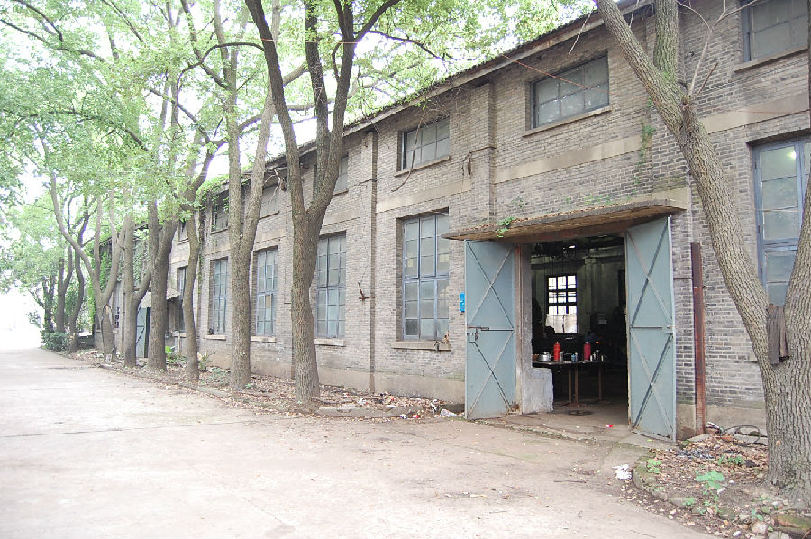

嘉兴市文物保护网 · 市级文物保护点 · 2020-11-09 · 原文

嘉兴石油机械厂老厂区位于嘉兴市南湖区东栅街道化东社区吴泾路48号，解放初建设，现建议保留五个车间（装配车间、精加工车间、机修车间、钣金车间、制造车间），总占地面积3423平方米。装配车间：（现为五金仓库60年代）东西走向，悬山顶，青砖墙，青瓦，目前仍作仓库。精加工车间：（现为三分厂60年代初）东西走向，悬山顶，红砖砌墙，人字形梁架，水泥钢筋梁。内部有行车两部，机器多台，仍在使用。机修车间（现为嘉兴中冶机械有限公司60年代中期）东西走向，硬山顶，人字形木梁架，青砖墙面，内墙刷成白色，水泥地面，仍在生产。钣金车间：建于50年代，东西走向，悬山顶，青砖砌墙，木梁架人字形结构，水泥地面，现为飞耀特种塑业工贸有限公司厂房。制造车间：（现为钢材仓库）：建于60年代，东西走向，悬山顶，外墙水泥粉墙。嘉兴石油机械厂曾是建国初期嘉兴为数不多的规模较大的国有企业之一，代表了当时嘉兴先进生产技术，具有较高的历史和科学价值。2009年公布为嘉兴市文物保护点。